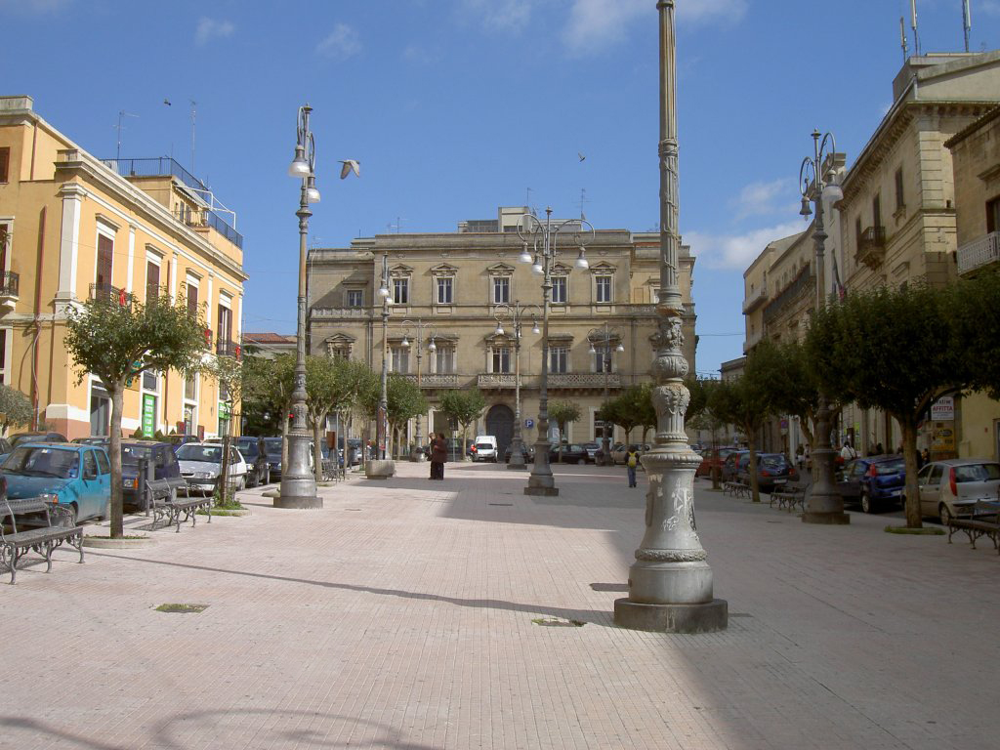

Enna — Il belvedere monumentale nel cuore del Belvedere di Sicilia.
Situata nel nucleo centrale della città più alta d'Italia, questa grande piazza terrazzata unisce la solennità delle istituzioni a panorami mozzafiato sull'entroterra isolano.

La piazza è celebre per la sua balconata panoramica che offre una vista sconfinata sulle vallate centrali della Sicilia, spingendo lo sguardo fino alle pendici dell'Etna nei giorni più limpidi.
A dominare uno dei lati della piazza si erge il complesso monumentale di San Francesco d'Assisi, con la sua imponente torre campanaria trecentesca che fungeva originariamente da torre di guardia.
Sede della Prefettura e monumentale esempio di architettura civile, l'edificio conferisce alla piazza il suo ruolo di baricentro istituzionale, amministrativo e storico della provincia ennese.
La piazza fa da snodo alla Via Roma, l'asse viario principale che attraversa il centro storico, e rappresenta lo spazio ideale per le grandi manifestazioni pubbliche e le processioni tradizionali.